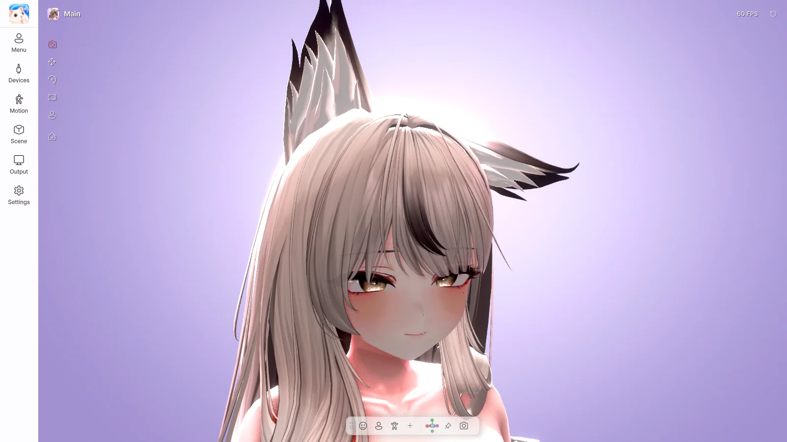

VTuber software for Windows
Your VRChat avatar
as a VTuber, as it is#
No conversion to VRM. No setting up shaders, swinging bones, expression menus or outfit toggles all over again.
The avatar you see in VRChat moves with your webcam and microphone, and goes straight out to OBS, Discord and Zoom.

How it used to be#
Most free VTuber programs are built around the VRM format. To use a VRChat avatar, you had to convert it to VRM, rebuild its shaders, and set up its swinging bones, expressions and outfit toggles again. In the end, the avatar on stream is not the avatar you see in VRChat. And you had to repeat all of this every time you changed the avatar.
How Avatar Live is different#
PhysBones as they are#
Hair, skirts and tails sway with the same settings as in VRChat. Grab them with the mouse and pose them in place.
Your expression menu as it is#
Toggles, buttons, Radials and Puppets from the VRChat Expressions menu, hand-gesture expressions, Contacts and Parameter Drivers all work.
Face tracking, connected automatically#
Uses the face tracking setup your avatar already has. A guided automatic face setup.
Desk hand motion#
Even when your hands are out of view, the avatar types along with your real keyboard and mouse. What you type is never recorded.
Game + avatar on Discord#
Sends your game and avatar together in a Discord screen share, without OBS. You see only the game.
At a glance#
| VRM-based programs (typical) | Avatar Live | |
|---|---|---|
| Preparing the avatar | Convert to VRM + set up shaders, sway and expressions again | One click in the Exporter |
| Shaders | Often have to be replaced with VRM shaders | Original shaders as they are |
| Swinging bones | Set up again as SpringBones | PhysBones as they are |
| Outfit and hair toggles, expression menu | Mostly have to be rebuilt | VRChat menu as it is |
| FX animator and Contact gimmicks | Do not work | Work |
| Applying avatar changes | Convert again from the start | Just export again |
Also included#
- Spout2 (OBS, transparent background) · Virtual camera (Zoom, Discord, Teams) · Discord screen share · PNG photos
- 10 lighting presets and direct light editing, plus effects such as bloom, color grading and depth of field
- Global hotkeys that work even in games, and Quick Actions buttons
- Keeps sending from the tray even after you close the window
- 한국어 · English · 日本語 · 简体中文
It may not be right for you if#
- You do not have the Unity project of your VRChat avatar (VRM or .vrca files alone cannot be used)
- You use a Live2D (2D) avatar, or macOS or Linux
Streaming, publishing videos and commercial use require the Pro edition. Basic is the standard edition for personal use. (Edition comparison)
Before buying, please check the requirements and the refund policy. As this is a digital product, it cannot be refunded after purchase.
🗺️ VRM support, phone face apps, a desktop mascot mode and more are planned.